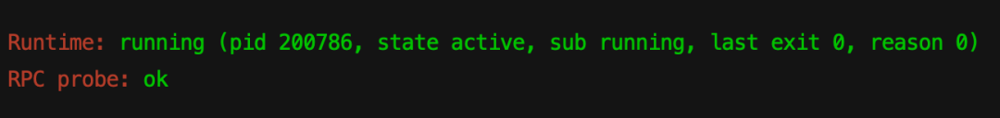
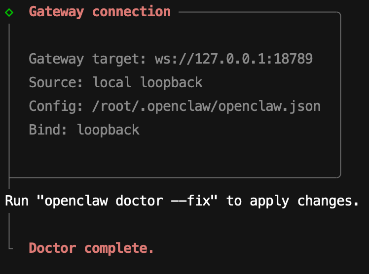
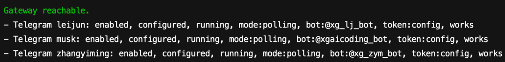

“🦞OpenClaw不回消息了❗️输啥都没用。”
群里几乎每天都有人问这个问题。骁哥自己也踩过好几次😅
今天骁哥把踩过的坑全整理出来了，下次🦞仔闹脾气，直接翻这篇
先跑一套"体检命令"
不管啥情况，先把这几条命令跑一遍，相当于给🦞仔做个全身体检 🏥
openclaw status # 总览：频道、会话、认证状态
openclaw status --all # 完整报告（截图发群里求助用）
openclaw gateway probe # 探测 Gateway 是否可达
openclaw gateway status # Gateway 服务 + RPC 探针
openclaw doctor # 自动诊断配置和服务问题
openclaw channels status --probe # 频道连接状态
openclaw logs --follow # 实时日志（划重点❗️这步最关键）
健康的🦞仔长这样 👇
☝️ openclaw gateway status 显示 Runtime: running 和 RPC probe: ok

✌️ openclaw doctor 没有报红色错误

3️⃣ openclaw channels status --probe 显示你的频道是enabled

4️⃣ openclaw logs --follow 近期没有重复刷红的报错
哪一步不对，直接往下翻对应的场景👇
场景一：Gateway 根本没跑起来
openclaw gateway status 显示 Runtime: stopped？
Gateway 就是🦞仔的心脏，心脏停了，它当然不会理你。这个是群里出现频率最高的问题。
☝️ 端口被占了
日志里看到 EADDRINUSE 或 another gateway instance is already listening。
# 找到占用端口的进程（默认端口 18789）
lsof -i :18789
# 杀掉它
kill <PID>
# 或者直接用 --force 启动，自动抢占端口
openclaw gateway --force
✌️ 没配置 gateway.mode
日志里看到 Gateway start blocked: set gateway.mode=local。
Gateway 不配 gateway.mode 就不让启动，跑一下配置向导就行：
openclaw configure
或者直接编辑 ~/.openclaw/openclaw.json：
{
gateway: { mode: "local" }
}
就想临时跑一下？加个 --allow-unconfigured 跳过检查：
openclaw gateway --allow-unconfigured
3️⃣ 绑定外网但没设认证
日志里看到 refusing to bind gateway ... without auth。
你把 Gateway 绑到了 lan 或 0.0.0.0，但没设密码。OpenClaw 不让你裸奔，必须设 token 或 password：
openclaw configure
# 按提示设置 auth token 或 password
4️⃣ 配置文件写错了
OpenClaw 对配置校验贼严格。多写了个字段、类型不对、格式有误，Gateway 直接罢工。
# 用 doctor 检查
openclaw doctor
# 自动修复（会先备份到 ~/.openclaw/openclaw.json.bak）
openclaw doctor --repair
💡
--fix是--repair的别名，效果一样。
大部分情况，一条命令搞定：
openclaw gateway restart
⚠️ 注意坑！这两个命令别搞混了：
openclaw gateway restart 重启后台服务（推荐 ✅）
openclaw gateway 前台运行，关掉终端就停了（临时调试用）
场景二：Gateway 在跑，但频道没连上
openclaw gateway status 显示 running，但 openclaw channels status --probe 显示频道没连上？
骁哥用的TG，所以分享下TG相关的经验💁♀️
Telegram 用户看这里 👇
Bot Token 配错或失效了：
# 验证 Token 是否有效
curl -s "https://api.telegram.org/bot<你的Token>/getMe"
返回 "ok": false？Token 有问题。去 Telegram 找 @BotFather 确认一下，拿到正确的 Token 更新配置：
// ~/.openclaw/openclaw.json
{
channels: {
telegram: {
enabled: true,
botToken: "你的新Token"
}
}
}
也可以用环境变量：TELEGRAM_BOT_TOKEN=你的Token
💡 改完配置一般不用手动重启，Gateway 会自己检测到文件变了然后重新加载。没生效的话再跑一下
openclaw gateway restart。
DNS/网络问题连不上 Telegram API：
日志里看到连接 api.telegram.org 失败，或者 setMyCommands 网络错误。国内服务器嘛……你懂的，大概率需要配代理 😅
场景三：频道连着，但就是不回消息
这个最让人抓狂。一切看起来都正常，但🦞仔就是装死 🤐
openclaw pairing list telegram # 把 telegram 换成你用的频道
openclaw logs --follow # 然后给它发条消息，盯着日志看
☝️ Pairing 没通过（最最最常见❗️）
OpenClaw 默认开了 pairing 模式。啥意思呢？就像你家门口装了个门禁，新来的人得先按门铃，你在里面按"开门"，他才能进来说话 🚪
新用户第一次发消息会收到一个 8 位配对码，你得在服务器上批准，🦞仔才会搭理他。
日志里看到 pairing request 就是这个原因。
# 查看待审批的配对请求
openclaw pairing list telegram
# 用配对码批准（CODE 就是那个 8 位大写字母）
openclaw pairing approve telegram <CODE>
⚠️ 注意坑！配对码 1 小时过期，每个频道最多同时挂 3 个待审批。过期了让对方重新发一条消息就行，会生成新的。
骁哥自己用的话，直接把 DM 策略改成 open，省得每次都要批：
{
channels: {
telegram: {
dmPolicy: "open",
allowFrom: ["*"]
}
}
}
✌️ 群聊需要 @提及才回复
OpenClaw 默认在群里得 @它 才会回复，不然就当没看见（怕刷屏嘛）。
日志里看到 drop guild message (mention required) 就是这个。
解决方案 👇
最简单：在群里 @你的bot 发消息。
想让它随时都回？改配置：
{
channels: {
telegram: {
groups: {
"*": { requireMention: false }
}
}
}
}
也可以在聊天里用命令切换（仅当前会话生效）：
/activation always # 不需要@也回复
/activation mention # 恢复需要@
3️⃣ Telegram Bot 的隐私模式挡了群消息
Telegram Bot 默认开着 Privacy Mode，在群里只能收到 /命令 和 @提及 的消息，其他消息压根收不到。
解决方法（二选一）：
🅰️ 去 @BotFather → /setprivacy → 选你的 Bot → Disable
🅱️ 把 Bot 设为群管理员（管理员自动收到所有消息）
⚠️ 注意坑！改完隐私模式后，必须把 Bot 从群里踢出去，再重新拉进来，Telegram 才会生效。骁哥当时卡在这一步卡了好久，差点以为是 Bug 🤪
4️⃣ Allowlist 把你挡了
日志里看到 blocked 或 allowlist 相关日志。
openclaw doctor --repair
⚠️ 注意坑！升级 OpenClaw 后特别容易中招。旧版本的 allowlist 可能用的是 @username 格式，新版本只认数字 ID。openclaw doctor --repair 会尝试自动转换（需要 Bot Token 才能解析）。
怎么查自己的 Telegram 数字 ID 🧏♀️
🅰️ 给你的 Bot 发条消息，然后 openclaw logs --follow，日志里的 from.id 就是
🅱️ 用 Bot API：`curl "https://api.telegram.org/bot
场景四：模型相关问题
☝️ API Key 过期或额度用完
日志里看到 401、403、rate limit、insufficient_quota 之类的错误。
说白了就是钱没了或者 Key 失效了。先去看看钱包余额吧 😂
openclaw logs --follow
# 看有没有 provider / credentials 相关的错误
几种常见情况 👇
🔴 API Key 过期或被撤销了
🔴 额度/余额花完了
🔴 Provider 配置丢了（日志里看到 No credentials found for profile "anthropic:default" 或 missingProvidersInUse）
修复：
openclaw configure
碰到 Anthropic 的 429 限流（HTTP 429: rate_limit_error），可能是并发太多或者额度不够。等一会儿，或者配个 fallback 模型，主力挂了自动切备用，不至于直接沉默：
{
agents: {
defaults: {
model: {
primary: "anthropic/claude-opus-4-6",
fallbacks: ["openai/claude-sonnet-4-6"]
}
}
}
}
骁哥建议都配一个 fallback，挺好使的 👍
✌️ 模型不在允许列表里
日志里看到 Model … is not allowed。
你在配置里定义了 agents.defaults.models 的话，这个列表同时就是白名单。用 /model 切到一个不在里面的模型，🦞仔就直接不回了，连个报错都不给你。
解决：把你要用的模型加到 models 配置里，或者 /model 切回去。
场景五：Cron / Heartbeat 不触发
设了定时任务或心跳，到点了没动静？
openclaw cron status
openclaw cron list
openclaw cron runs --id <jobId> --limit 20
☝️ Cron 调度器被禁用了
日志里看到 cron: scheduler disabled; jobs will not run automatically。检查配置里 cron 是否启用。
✌️ 静默时段（Quiet Hours）
日志里看到 heartbeat skipped with reason=quiet-hours。你可能配了"安静时间"，这个时间段内 Heartbeat 不会触发。
3️⃣ 主会话正忙
日志里看到 requests-in-flight。🦞仔正在处理别的请求，Heartbeat 就排队等着呢。等忙完了自然会触发，不用管。
4️⃣ Heartbeat 的 accountId 配错了
日志里看到 heartbeat: unknown accountId。检查 heartbeat 配置里的 account ID 对不对。
万能急救三连
上面的场景都对不上？或者懒得一个个排查？试试这三步 👇
# ☝️ 自动诊断 + 修复
openclaw doctor --repair
# ✌️ 重启 Gateway
openclaw gateway restart
# 3️⃣ 看实时日志，发条消息，观察报错
openclaw logs --follow
90% 的问题，这三步就能解决。舒服了 ✅
还是不行？跑一下 openclaw status --all，把完整输出截图发到群里或者 GitHub Discussions，大家帮你看 🤝
排查速查表
骁哥给大家整了一张表，建议收藏 👇
小结
骁哥觉得最管用的排查方式就是看日志。openclaw logs --follow 然后给🦞仔发条消息，日志里会告诉你消息到底卡在了哪一步
养成一个习惯：每次改完配置、升级完版本，跑一遍 openclaw doctor。没那么难，跟着上面的速查表走就行 😎
也可以直接去看下官方文档👉
https://docs.openclaw.ai/zh-CN/help/faq
那本期就这样，我是🦞OpenClaw驯兽师骁哥，下期见，88👋🤓
往期实践👇
Vibe Coding之父：OpenClaw是 AI 的第三阶段？
如何让 OpenClaw 主动找你搭话（发日报）？Heartbeat + Cron 终极攻略
OpenClaw之父加入OpenAI！从小镇少年到改变世界，这哥们的故事比电影还燃